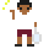

Game
Arcade

-
{% comment %}
Tiles show in the order of _data/games.yml. This first loop walks that list
and makes a tile for each game whose games/
- {{ info.title | default: folder | replace: "-", " " }} {% if info.blurb %}{{ info.blurb }}{% endif %} {% endif %} {% endfor %} {% comment %} A game missing from _data/games.yml still gets a tile, after the listed ones: its folder name, so "space-blaster" shows as "space blaster". {% endcomment %} {% for file in game_pages %} {% assign folder = file.path | remove: "/index.html" | split: "/" | last %} {% unless site.data.games[folder] %}
- {{ folder | replace: "-", " " }} {% endunless %} {% endfor %}